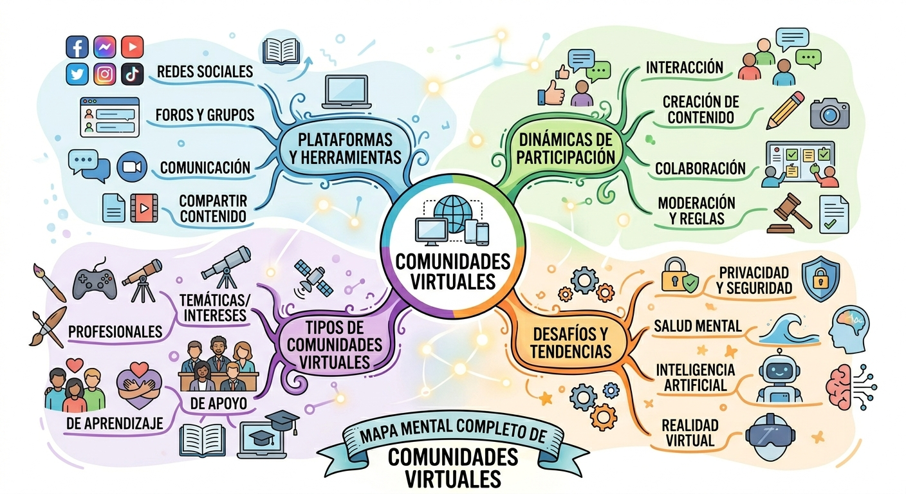
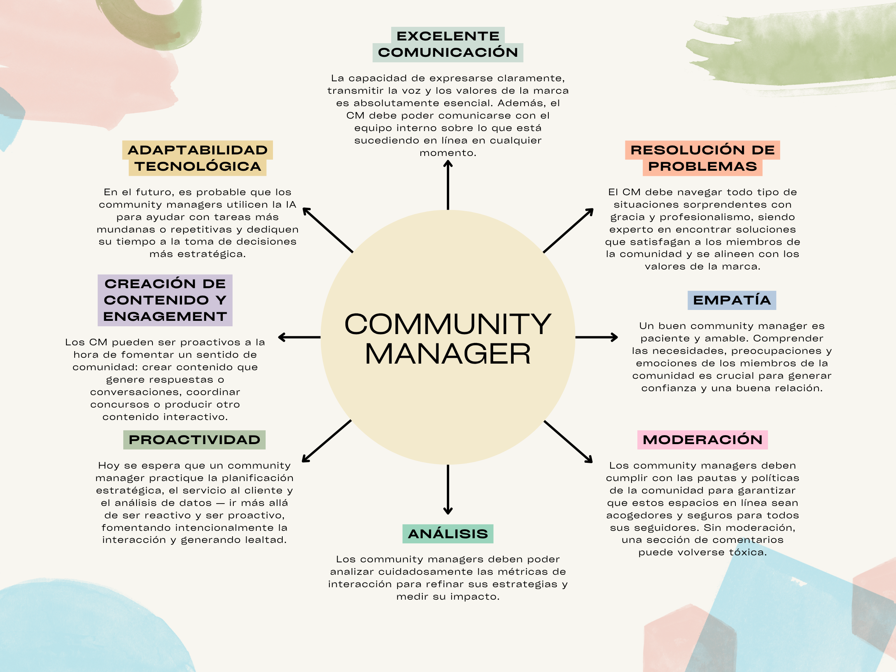

Actividades
Comunidades Virtuales en la Era Digital
Investigación y análisis sobre las comunidades que viven en el ciberespacio

Definición y Origen
Una comunidad virtual es un grupo de personas que interactúan a través de internet, compartiendo intereses, objetivos o actividades en común, sin necesidad de estar en el mismo lugar físico. Este tipo de comunidad surge gracias al desarrollo de las tecnologías digitales y es estudiado en áreas como la Sociología y la Comunicación Digital.
El término fue empleado por primera vez en 1994 por el ensayista estadounidense Howard Rheingold en su obra "La comunidad virtual". Sin embargo, las primeras comunidades virtuales surgieron en la década de 1970, en torno al intercambio de datos del ámbito militar, científico y académico, mediante sistemas de boletín informativo (BBS) o tablones de anuncios.
Tres Dimensiones de una Comunidad Virtual
📍 Como Lugar
Espacio donde los individuos mantienen relaciones sociales o económicas. Un territorio digital que conecta a personas separadas físicamente.
🔣 Como Símbolo
Los miembros desarrollan un sentido de pertenencia e identidad colectiva, un "código cultural" propio que los une como grupo.
🌐 Como Virtual
Comparte rasgos con las comunidades físicas, pero se desarrolla total o parcialmente en un espacio construido a partir de conexiones telemáticas.
Elementos que Definen una Comunidad Virtual
👥 Usuarios o Miembros
Participan de forma activa (publicando, comentando, moderando) o pasiva (leyendo y observando sin interactuar directamente).
💻 Plataforma Digital
El espacio de interacción: redes sociales, foros (Reddit, Quora), mensajería (Discord, Telegram), plataformas educativas (Moodle, Coursera).
💬 Interacción
Comunicación constante mediante mensajes, comentarios, publicaciones, reacciones o videollamadas. Es el motor que mantiene viva a la comunidad.
🎯 Intereses Comunes
Tema o propósito compartido: videojuegos, educación, arte, tecnología, salud, activismo, entretenimiento o negocios.
📜 Normas o Reglas
Lineamientos que regulan el comportamiento. Sin moderación, las comunidades pueden volverse espacios tóxicos o desordenados.
🪪 Identidad Digital
Forma en que cada usuario se representa: perfil, nombre de usuario, avatar, firma o descripción personal.
Tipos de Comunidades Virtuales
Características Principales
- No requieren contacto físico entre sus miembros.
- Acceso desde cualquier lugar con conexión a internet.
- Comunicación síncrona (chats en vivo) y asíncrona (publicaciones, correos).
- Gran diversidad cultural y geográfica entre sus integrantes.
- Desarrollo de lenguaje propio: jerga, memes, expresiones y costumbres de la comunidad.
- Flexibilidad en la participación: cada usuario decide cuánto y cuándo interactuar.
Comunidad Virtual vs Red Social
🌐 Comunidad Virtual
Se centra en un tema, interés o propósito compartido. El elemento central es la actividad en común. Ejemplo: un servidor de Discord de jugadores de Minecraft.
👤 Red Social
Se centra en los individuos y sus conexiones personales. El elemento central es la persona. Ejemplo: Facebook en su conjunto, aunque dentro existen comunidades.
Impacto de la Pandemia (COVID-19)
Las comunidades virtuales crecieron de forma significativa durante la pandemia (2020–2021). El distanciamiento social eliminó el contacto físico, pero fortaleció las conexiones digitales. El aislamiento obligó a explotar los medios digitales para mantener la actividad laboral y social, multiplicando la aparición de creadores de contenido que generaron comunidades en torno a su figura.
Funciones y Utilidades
📖 Conocimiento
Compartir información y aprender en conjunto (educación formal e informal).
🤗 Apoyo social
Brindar apoyo emocional o social y facilitar la colaboración en proyectos.
📊 Investigación
Obtener retroalimentación directa de usuarios sobre productos, servicios o contenidos.
✊ Activismo
Movilización ciudadana, generación de ingresos y networking profesional.
Conclusión: Las comunidades virtuales han transformado la forma en que las personas se relacionan, permitiendo la conexión global sin barreras físicas. Desde los primeros tablones de anuncios de los años 70 hasta los complejos ecosistemas digitales actuales, estas comunidades demuestran que el ser humano siempre buscará agruparse, compartir y pertenecer a algo más grande.
Community Manager
El profesional detrás de la gestión de comunidades digitales

¿Qué es un Community Manager?
Un Community Manager (CM) es el profesional encargado de gestionar, construir y moderar las comunidades en línea de una marca, empresa u organización. Es el puente de comunicación entre la marca y su audiencia digital, creando contenido, respondiendo consultas y analizando métricas para fortalecer la presencia en redes sociales.
Funciones Principales
📝 Creación de Contenido
Planificar, crear y publicar contenido atractivo y relevante para cada plataforma social, manteniendo la identidad y voz de la marca.
💬 Gestión de la Comunidad
Responder mensajes, comentarios y menciones. Moderar conversaciones y resolver quejas o dudas de los usuarios en tiempo real.
📊 Analítica y Métricas
Monitorear el rendimiento de las publicaciones, analizar estadísticas de interacción y generar reportes para optimizar la estrategia.
📅 Planificación Estratégica
Diseñar calendarios de publicaciones, campañas y estrategias de crecimiento alineadas con los objetivos de la marca o empresa.
🛡️ Gestión de Crisis
Manejar situaciones de crisis o comentarios negativos con profesionalismo, protegiendo la reputación de la marca en entornos digitales.
🔍 Social Listening
Monitorear qué se dice sobre la marca en redes sociales y foros, identificando tendencias, oportunidades y posibles amenazas.
Habilidades Esenciales
Herramientas del Community Manager
- Hootsuite / Buffer: Programación y gestión de publicaciones en múltiples redes desde un solo panel.
- Canva: Diseño rápido de gráficos, infografías y piezas visuales para redes sociales.
- Meta Business Suite: Gestión de Facebook e Instagram con analíticas detalladas.
- Google Analytics: Seguimiento de tráfico web proveniente de redes sociales.
- Sprout Social / Brandwatch: Social listening y análisis de sentimiento de la audiencia.
- ChatGPT / IA generativa: Apoyo en la generación de ideas, copys y contenido creativo.
Community Manager vs Social Media Manager
👤 Community Manager
Se enfoca en la interacción directa con la audiencia: responder, moderar, crear vínculo. Es la voz de la marca en el día a día. Rol operativo y de ejecución.
📋 Social Media Manager
Se enfoca en la estrategia global de redes sociales: define objetivos, diseña campañas y mide resultados. Rol estratégico y de dirección.
Dato clave: El rol de Community Manager se ha convertido en una de las profesiones más demandadas en el marketing digital. En México, un CM puede ganar entre $8,000 y $25,000 MXN mensuales dependiendo de la experiencia y el tamaño de la empresa.
El Día de las Madres
Historia, datos curiosos y cómo se vive esta tradición alrededor del mundo y especialmente en México.
Vista Previa
Cada año, millones de familias en México se despiertan antes del amanecer para entonar las Mañanitas, llenar las cocinas con el olor del champurrado y coronar el día con mesas llenas. Pero detrás de esta celebración tan cotidiana se esconde una historia que pocas personas conocen: una mezcla de feminismo, pacifismo, ironía y comercialismo que transformó un llamado de paz en el segundo día más lucrativo del planeta.
El Día de las Madres nació del dolor —no del amor— y fue creado por una mujer que terminó odiando lo que fundó. Descubre en este artículo publicado en Blogger la historia completa de Ana Jarvis, y cómo México fue el único país que decidió fijar el 10 de Mayo sin importar qué día de la semana caiga.
Temas cubiertos
Los Influencers en el Marketing
Análisis sobre el rol, la credibilidad y los desafíos de los líderes mediáticos de internet en las estrategias de marcas.
Vista Previa
Un influencer es una persona que tiene presencia y credibilidad en las redes sociales, y que, como su nombre lo indica, puede influir en las decisiones o comportamientos de otras personas. Se han convertido en líderes mediáticos gracias a la inmediatez de Internet a nivel mundial.
A diferencia de las celebridades de la televisión tradicional, la confianza que un influencer construye con su audiencia no surge de la fama instantánea, sino de un proceso gradual basado en la constancia, la autenticidad y su narrativa personal. ¿Es fácil ser un influencer? ¿Cuáles son sus principales problemas de privacidad y estrés laboral? Descubre todas las respuestas en este artículo.
Temas cubiertos
RSS (Really Simple Syndication)
Cuadro comparativo de doble entrada sobre los diferentes métodos para consumir contenido RSS.
| Categoría | RSS General | Lectores Online (Web) | Navegadores | Correo Electrónico |
|---|---|---|---|---|
| Concepto | Formato XML para la sindicación y distribución de contenido web. Permite recibir actualizaciones de sitios favoritos de forma automática sin visitarlos individualmente. | Servicio web que permite gestionar feeds RSS desde un navegador, sin instalar software. El usuario accede desde cualquier dispositivo con internet. | Funcionalidad integrada en navegadores modernos para detectar y suscribirse a feeds RSS directamente desde la barra de direcciones o menú. | Cliente de correo que incluye lector RSS integrado, permitiendo recibir actualizaciones de feeds en la misma bandeja de entrada donde llegan los emails. |
| Funciones |
|
|
|
|
| Ventajas |
|
|
|
|
| Desventajas |
|
|
|
|
| Ejemplos de uso |
|
|
|
|
| Tipos de RSS |
|
|
|
|
| Programas / Lectores |
Agregadores en general:
|
Lectores online (web):
|
Navegadores con soporte RSS:
|
Clientes de correo con RSS:
|